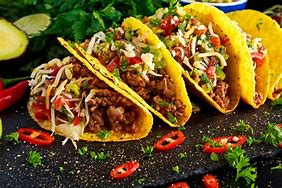

We believe everyone deserves the right to Live Más – and we’re constantly inspired by the creativity it takes to get there. At Taco Bell, we’ve had innovation on our mind since Glen Bell started serving tacos at the first location in 1962 in Downey, California. Since then, we’ve grown to be a culture-centric, lifestyle brand that provides craveable, affordable Mexican-inspired food with bold flavors. Not only do we provide breakthrough value, we offer quality ingredients and are the first QSR restaurant to offer American Vegetarian Association (AVA)-certified menu items.
Taco Bell and our more than 350 franchise organizations operate over 7,000 restaurants that serve more than 40 million customers each week in the U.S. Internationally, the brand is growing with nearly 500 restaurants across almost 30 countries across the globe.
We provide educational opportunities and serve the community through our nonprofit organization, the Taco Bell Foundation, and support fans and team members with their passions through programs such as the Live Más Scholarship. We provide access to sports, gaming and new music through our Feed The Beat program.
Outside of our restaurants, fans can access Taco Bell through our mobile app, desktop on Ta.co and delivery through our partnership with Grubhub. Taco Bell became the first QSR to launch a mobile app in U.S. restaurants for both drive-thru and dining orders. In 2016, we were named as one of Fast Company’s Top 10 Most Innovative Companies in the World.